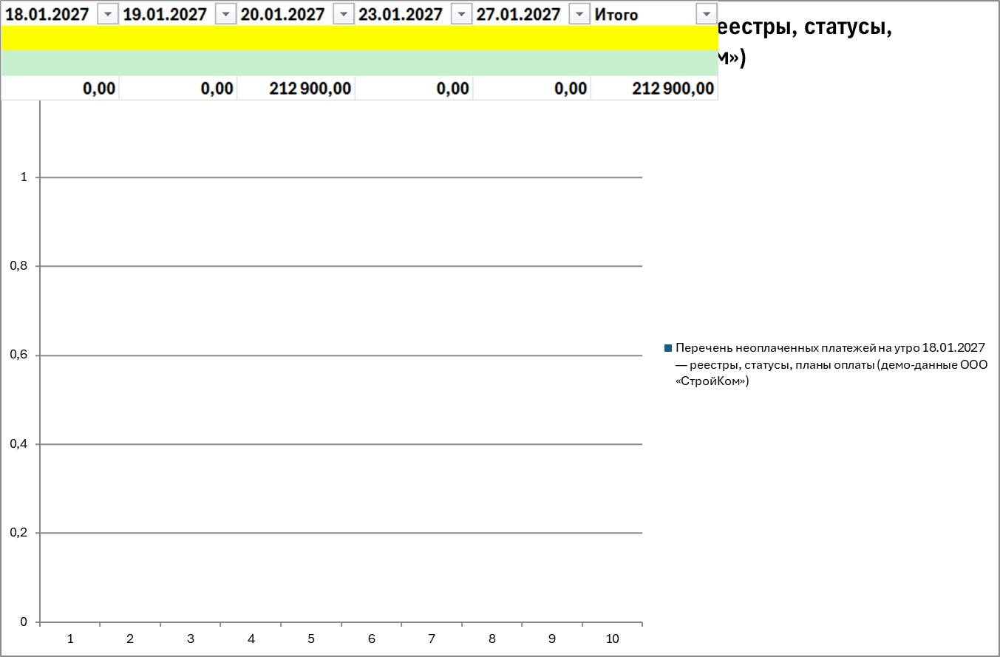
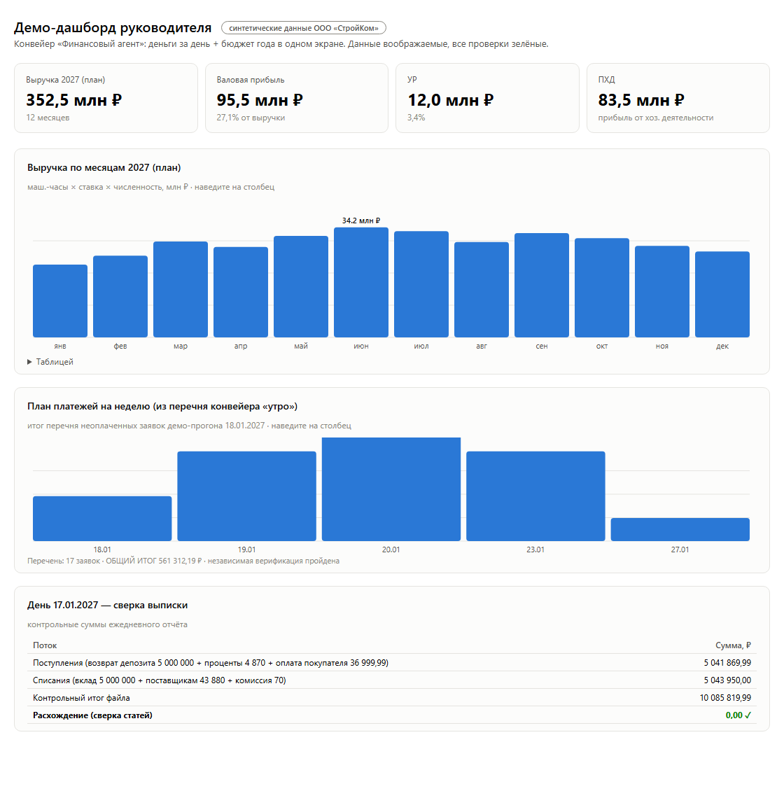

1–2 часа ручной сводки → минуты конвейера
расхождение с выпиской: 0,00
20+ рабочих дней непрерывной эксплуатации
1. Конвейер «утро» (главный сценарий)
Утром агент получает 4 файла (выписка, реестры платежей, журнал заявок, перечень 1С) и за минуты строит перечень неоплаченных заявок с живыми формулами и независимой сверкой.

2. Проверка каждого артефакта
Сборка завершается контрольными равенствами (COM) и независимым верификатором (SheetJS): Σ колонок дат = ОБЩИЙ ИТОГ = контрольные суммы. Журнал проверки прикладывается к каждому прогону.
Журнал верификации демо-прогона →

3. Дашборд руководителя
Деньги за день и бюджет года на одном экране; демо-версия на вымышленных данных открывается в браузере.

Как запустить у себя
Windows + Node.js + Excel. Полный пошаговый разбор на синтетических данных — инструкция демонстрации: генератор данных в комплекте, реальных выгрузок не требуется.